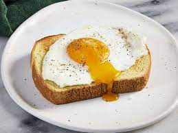

Basted Eggs

Description
This recipe produces a delicious, simple egg with satisfying, set
whites and a creamy, runny yolk. It's similar to a poached egg, but
more flavorful and less fussy.
Have you ever made a basted egg? If you haven't, it's time to remedy
that ASAP! Basted eggs are similar to poached eggs, but they're much
easier to cook. You'll come back to this simple basted egg recipe
time and time again.
A basted egg is somewhere between a sunny side up fried egg and a
poached egg. Basted eggs are fried on the bottom and steamed on top.
They look similar to sunny side up eggs, but the yolk is slightly
more set.
Ingredients
- 1 ½ tablespoons salted butter
- 2 large eggs
- 1 tablespoon water
- ⅛ teaspoon freshly ground black pepper
- 1 pinch flaky sea salt, or to taste
Steps
- Melt butter in a medium nonstick skillet over medium heat.
- Carefully crack eggs into the skillet and let cook until whites
have almost set, about 1 minute.
- Add water, cover skillet with a lid or cookie sheet, reduce heat
to medium-low, and let cook until whites have set, yolks are
still runny, and some of white has set over yolk, 1 to 2 more
minutes.
- Remove lid and transfer eggs to a serving plate. Garnish with
pepper and flaky salt, if desired. Serve immediately.